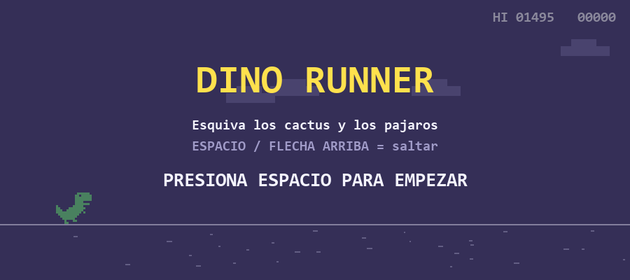
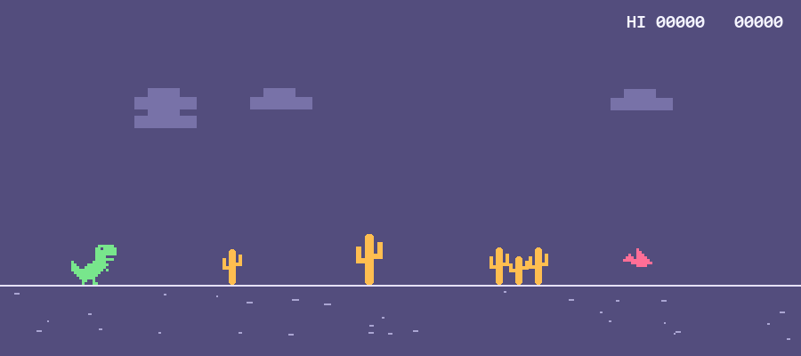
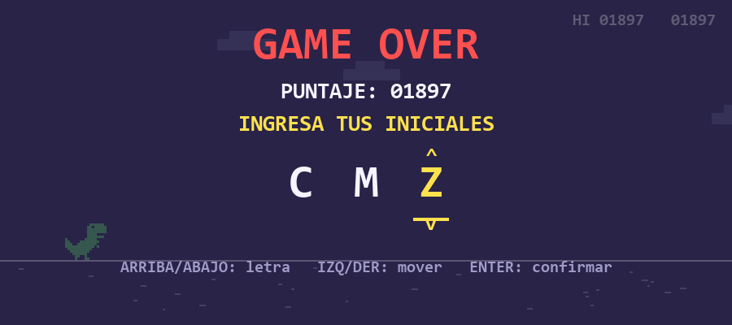
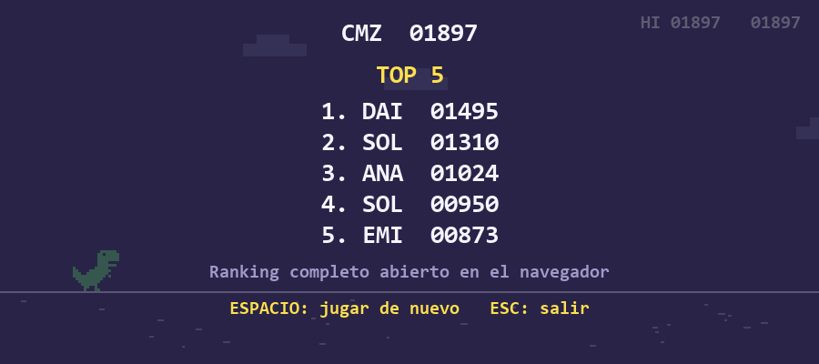
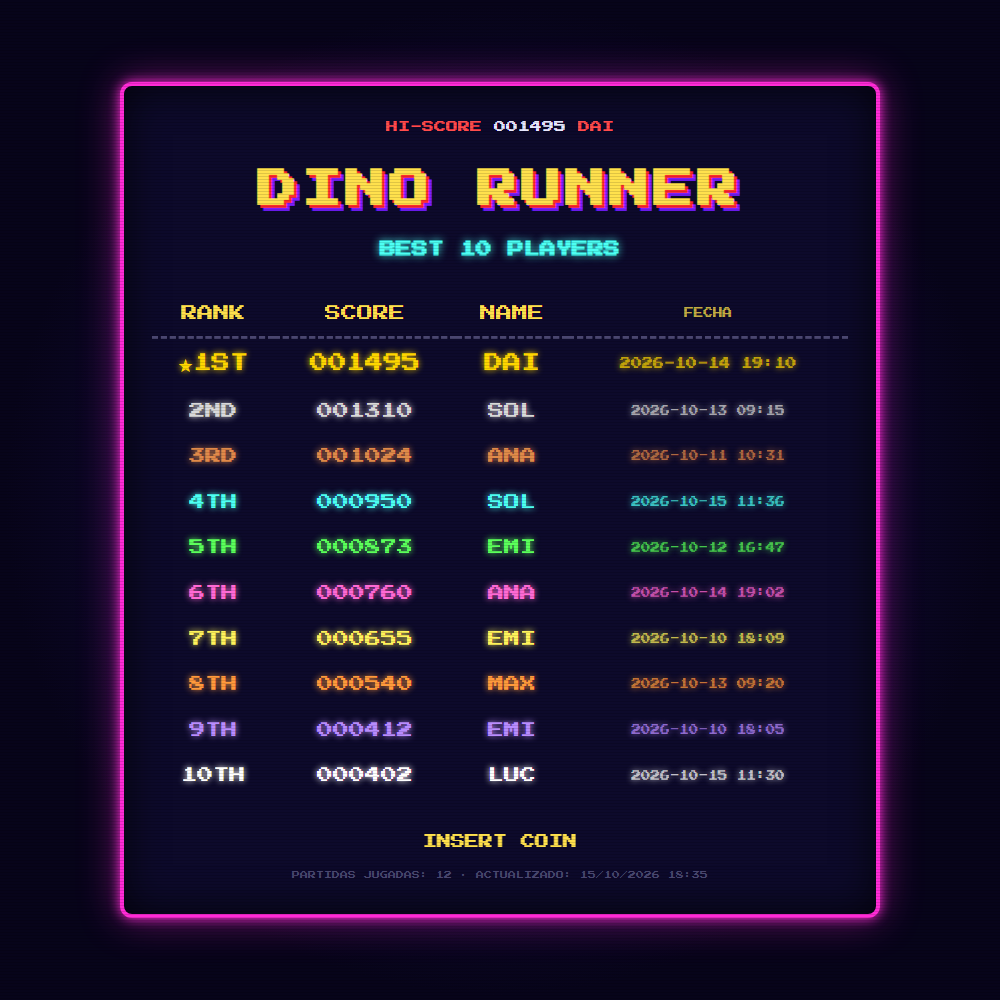

Juego arcade en Python: Dino Runner
(Pygame + HTML/CSS)
Alumno/a: [NOMBRE Y APELLIDO]
Comisión: [COMISIÓN]
Docente: [DOCENTE]
Fecha de entrega: 16 de octubre de 2026
El objetivo del trabajo fue programar un juego 2D del tipo "corredor infinito", inspirado en el dinosaurio que aparece en Google Chrome cuando no hay conexión a internet. El personaje corre automáticamente y el jugador solo tiene que saltar para esquivar los obstáculos. Gana más puntos quien sobreviva más tiempo.
Elegí mantener la idea original del dinosaurio porque las reglas son simples y conocidas, lo que me permitió concentrarme en las partes técnicas: la física del salto, la detección de colisiones, la dificultad creciente, el guardado de los resultados y la generación del ranking en HTML. Además de los requisitos mínimos, implementé varios desafíos opcionales:
proyecto_final/ ├── juego.py # el juego en Pygame (loop, física, dibujo, pantallas) ├── datos.py # guardado y lectura de ranking.txt ├── generar_ranking.py # ordena las partidas y arma ranking.html ├── estilos.css # estética arcade del ranking ├── ranking.txt # una línea por partida, crece con cada juego ├── ranking.html # se regenera después de cada partida └── capturas/ # capturas de pantalla (tecla F12 en el juego)
| Archivo | Responsabilidad |
|---|---|
juego.py |
Crea la ventana, ejecuta el game loop, maneja el teclado, la física del salto, los obstáculos, el puntaje, los sonidos y todas las pantallas (inicio, juego, game over, iniciales). |
datos.py |
Se encarga solo de los datos: guardar_resultado() agrega una línea al final de
ranking.txt y leer_partidas() lo lee y devuelve una lista de diccionarios. |
generar_ranking.py |
Usa leer_partidas(), ordena la lista de mayor a menor, toma las 10 primeras y escribe
ranking.html. Se puede ejecutar solo (python generar_ranking.py) o desde el juego. |
estilos.css |
Define el aspecto retro: fuente pixelada, colores neón, un color distinto por puesto, líneas de monitor CRT y el texto "INSERT COIN" que parpadea. |
Cómo se relacionan: al terminar una partida, juego.py llama a
guardar_resultado() de datos.py y después a generar_ranking(abrir=True)
de generar_ranking.py, que vuelve a leer ranking.txt, genera el HTML (que enlaza a
estilos.css) y lo abre en el navegador con el módulo webbrowser.
juego.py ──guardar_resultado()──▶ datos.py ──escribe──▶ ranking.txt
│ ▲
└──generar_ranking()──▶ generar_ranking.py ──lee── ┘
│
└──escribe──▶ ranking.html ──usa──▶ estilos.css
│
└──▶ se abre en el navegador
El juego funciona como una máquina de estados guardada en la variable estado:
"inicio" → "jugando" → "choque" → "iniciales" → "fin" → "jugando". En cada vuelta del loop
se hacen siempre tres pasos: (1) leer los eventos del teclado, (2) actualizar la lógica según el estado y
(3) dibujar. El loop corre a 60 cuadros por segundo con pygame.time.Clock.
Todos los movimientos se calculan multiplicando por dt (los segundos que pasaron desde el
cuadro anterior). Así el juego se mueve a la misma velocidad aunque la computadora sea más lenta o más rápida.
El dinosaurio tiene una velocidad vertical vel_y. Al presionar espacio se le asigna una
velocidad negativa (hacia arriba) y en cada cuadro la gravedad la va aumentando:
jugador["vel_y"] += GRAVEDAD * dt # la gravedad frena la subida y acelera la caída
jugador["y"] += jugador["vel_y"] * dt # la velocidad mueve al personaje
if jugador["y"] >= piso: # tocó el suelo
jugador["y"] = piso
jugador["vel_y"] = 0
jugador["en_suelo"] = True
Solo se puede saltar si en_suelo es verdadero (no hay doble salto). Además, si se suelta la
tecla mientras sube, la velocidad se recorta y el salto es más bajo, igual que en el juego original. Con
los valores elegidos (gravedad 2600 px/s², salto de 900 px/s) el salto alcanza unos 150 píxeles de altura.
Los obstáculos se guardan en una lista. Cada uno es un diccionario con su tipo y un pygame.Rect.
En cada cuadro se mueven hacia la izquierda y se eliminan de la lista los que salieron de la pantalla.
La distancia hasta el siguiente obstáculo es aleatoria, pero su mínimo crece con la velocidad, para que
siempre se pueda caer entre dos obstáculos. Los pájaros aparecen recién cuando el juego va más rápido:
el pájaro bajo hay que saltarlo y el alto, en cambio, pasa por arriba si no se salta.
La velocidad empieza en 420 px/s y aumenta 10 px/s por cada segundo jugado, hasta un máximo de 1100 px/s. El puntaje se calcula a partir de la distancia recorrida, por lo que también crece más rápido a medida que aumenta la velocidad.
Se usa Rect.colliderect() de Pygame entre el rectángulo del dinosaurio y el de cada obstáculo.
Como los dibujos tienen partes transparentes en las esquinas, los rectángulos se achican unos píxeles con
inflate() antes de comparar. Así se evita perder por "tocar" un obstáculo que visualmente no se tocó.
Las tres letras se guardan como posiciones dentro del texto "ABC...Z". Las flechas arriba y
abajo suman o restan 1 usando el operador % para que después de la Z vuelva a la A. Izquierda y
derecha cambian de letra, y ENTER confirma. También se puede escribir la letra directamente con el teclado.
Cada partida se guarda como una línea de texto INICIALES;PUNTAJE;FECHA, por ejemplo
ANA;1024;2026-10-11 10:31. El archivo se abre en modo "a" (append) para que cada
resultado se agregue al final sin borrar los anteriores. Al leerlo se ignoran las líneas vacías o mal
formadas, para que un error en el archivo no haga fallar el juego.
Las partidas se ordenan de mayor a menor con un ordenamiento por inserción programado a mano
(en lugar de usar sorted()), para practicar lo visto en la cursada. Si hay empate, queda primero
la partida más antigua. Después se toman los 10 primeros y se arma el HTML con un f-string; si hay menos de
10 partidas, las filas faltantes se completan con guiones. Las iniciales se pasan por
html.escape() por seguridad. Finalmente webbrowser.open() abre la página.
Reemplazar estas imágenes por capturas propias si se desea (en el juego, la tecla F12 guarda una captura en la carpeta capturas/).





| Dificultad | Solución |
|---|---|
| La velocidad del juego cambiaba según la computadora. | Multiplicar todos los movimientos por dt y limitar los FPS con Clock.tick().
También se limita dt a 0,05 s para que, si la ventana se traba, el dinosaurio no atraviese un obstáculo. |
| Se podía saltar en el aire (salto infinito). | Agregar la variable en_suelo y permitir el salto solo cuando es verdadera. |
| A alta velocidad aparecían obstáculos tan juntos que era imposible pasarlos. | Calcular la distancia mínima entre obstáculos en función de la velocidad actual. |
| Choques "injustos" por las esquinas transparentes de los dibujos. | Achicar los rectángulos de colisión con inflate(). |
| El ranking se guardaba en otra carpeta si el juego se ejecutaba desde otro lugar. | Armar las rutas a partir de la carpeta del propio archivo con Path(__file__).parent. |
| Querer agregar sonidos sin depender de archivos de audio externos. | Generar los sonidos por código: una onda cuadrada (o ruido para el choque) cuyo volumen baja hasta cero. |
[Agregar aquí otras dificultades propias que hayan surgido durante el desarrollo.]
python -m venv .venv .venv\Scripts\activate
pip install pygame(En versiones muy nuevas de Python, si
pygame no instala, usar pip install pygame-ce,
que es compatible y se importa igual.)python juego.py
python generar_ranking.pyControles: ESPACIO o FLECHA ARRIBA para saltar · flechas y ENTER para las iniciales · F12 para guardar una captura · ESC para salir.